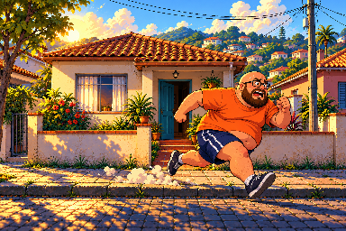

PROPOSTA VISUAL · KINHU V2
Kinhu original, com três ajustes
Sem sorriso, barriga maior e bermuda azul. A barba, os óculos, o cabelo e as cores continuam os do original.
VERSÃO ANTERIOROriginal
Visual anterior, guardado para comparação.
APROVADO E INTEGRADOOriginal com os ajustes pedidos
Barba e óculos originais; sem sorriso, barriga maior e bermuda.
Original no cenário
Proposta no cenário

Ajustes sobre o original
- Boca e dentes removidos, preenchidos com a barba original.
- Camiseta mais arredondada e barriga maior na frente.
- Bermuda azul, joelhos à mostra e os mesmos tênis.
- Barba, óculos, cabelo e paleta preservados.
Visual aprovado e integrado ao jogo e à versão offline. Todas as animações, poderes, camisetas e o HUD usam os ajustes. Mantidos 20 × 24 pixels e a posição dos pés.
Jogar a versão offline atualizada